Producto realizado
Producto realizado
Arkitex es un proyecto para que los albañiles puedan subir fotos de su trabajo y difundirlo con posibles empleadores, una plataforma donde trabajadores y empleadores estaran en un mismo entorno con el objetivo de que se conecten, dependiendo de su rol se crearan distintos perfiles y en su feed se mostrara distinto contenido.
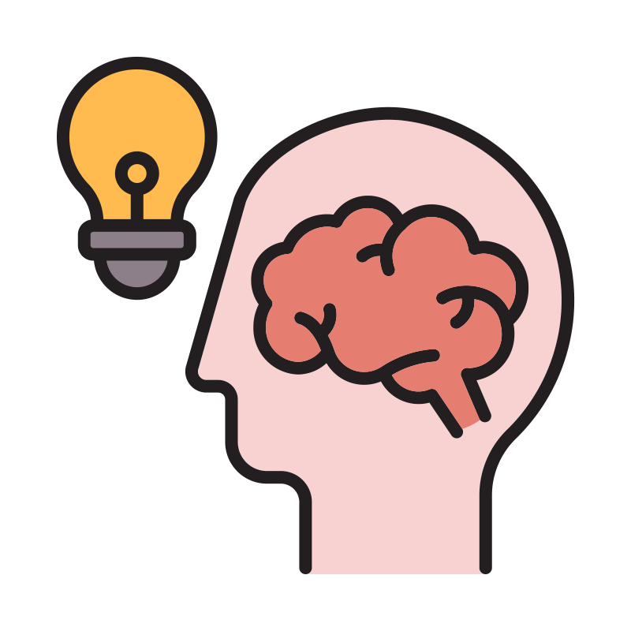 Problematica
Las personas que se dedican a este oficio no tienen una oferta laboral segura, su trabajo se basa en un "de boca en boca" y hay quienes les cuesta ingresar a alguna obra, teniendo lapsos entre trabajos muy largos.
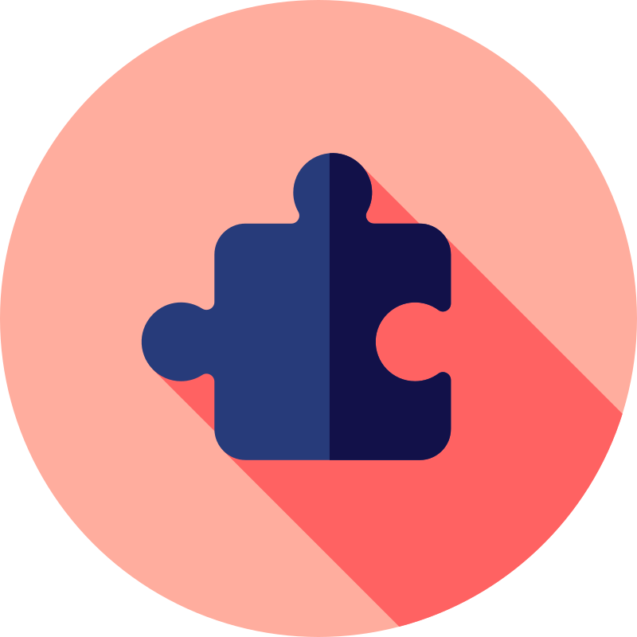 Mi rol en el proyecto
Investigador de U.X y Diseñador de Experiencia de usuario y diseñador de interfaz.
 Duración
Duración
El proyecto inicio en enero 2023 y culminaron las pruebas y los diseños en abril 2023.
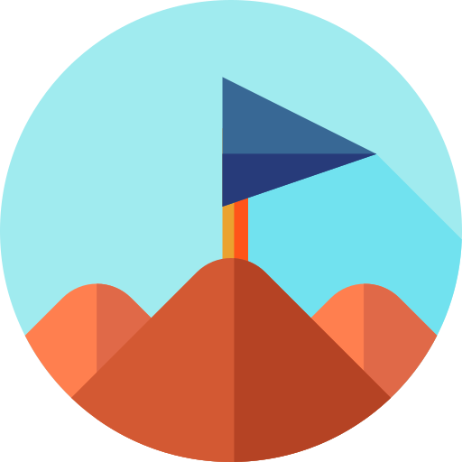 Objetivo
Realizar una aplicación que aumente las ofertas laborales de los trabajadores y los conecte con las personas que tengan pensado realizar una remodelación, que sirva como una herramienta para conectar a la gente y lograr más movimiento en esa area, asi actualizando la forma en que se generan empleos.
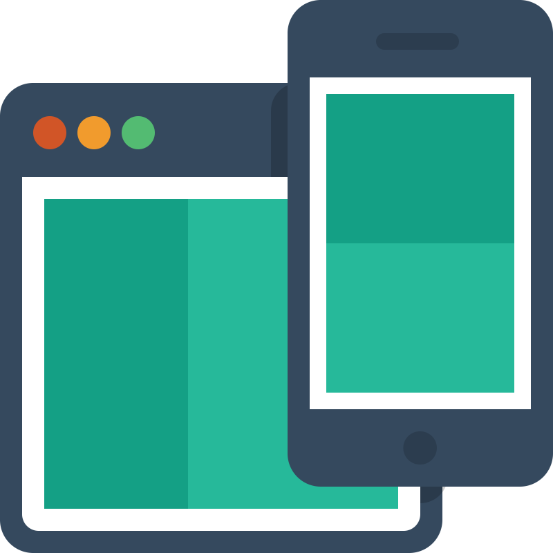 Responsabilidades
Entrevistas a los usuarios, mapas de empatia, “Personas”, auditorias competitivas, reportes de avances y conclusiones, wireframes, prototipos, sistemas de diseño.
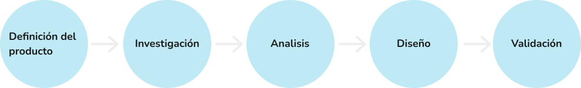
Realice varias entrevistas a albañiles de mi localidad acerca de sus Experiencias con el trabajo y cuanto tiempo pasan sin tener ofertas, y que opinarian si hubiera una plataforma que les permitiera difundir su trabajo y conectar con una cantidad mayor de empleadores.
Personas
Se crearon nuestras personas ejemplo, las cuales representan nuestros usuarios entrevistados.
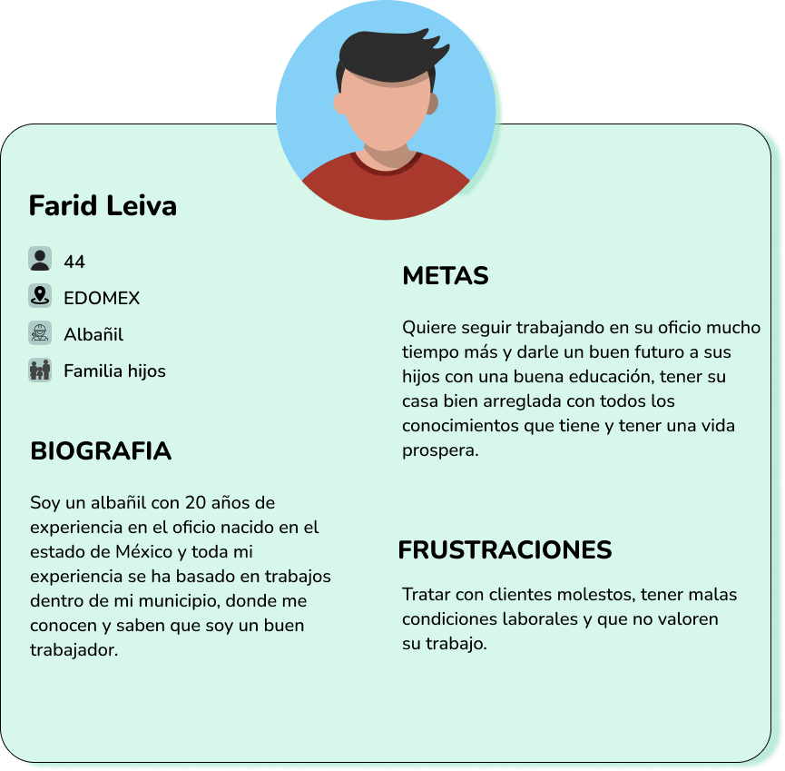 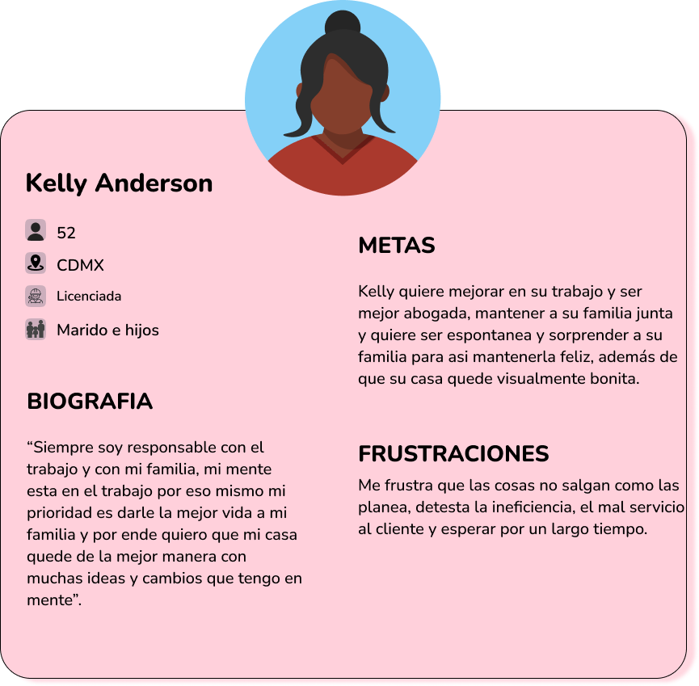Mapa de sitio
Se planifica y se mapea los pasos que puede seguir el usuario navegando por la aplicación, aunque no se tenga un producto digital en este punto del proceso, se debe definir el flujo del usuario.

Wireframes en papel
En el proceso de diseño comenzamos haciendo esquemas de pagina en papel, creando 8 ideas, una por minuto, usando la tecnica Crazy Eight para una aplicación, de esta forma dar ideas de donde acomodar distintos componentes como botones, barras de busqueda, imagenes, etc.
 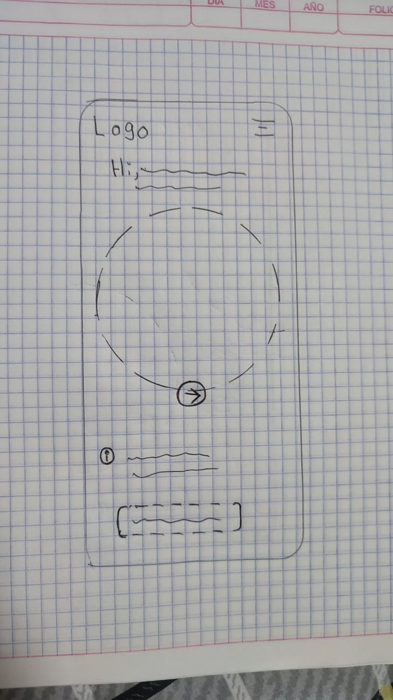
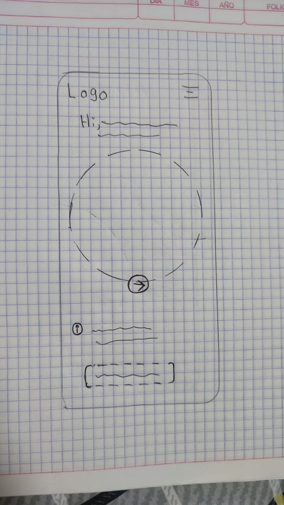
Wireframes digitales
Despues de definir un wireframe en papel despues de varios diseños, utilizamos un diseño final y lo llevamos aFIGMA para darle vida a un prototipo de baja fidelidad donde apenas definiremos la estructura de la aplicación sin imagenes, color, iconografia y tipografia.
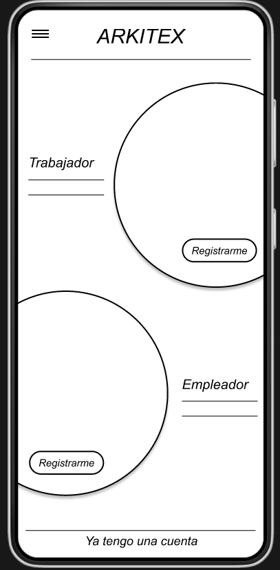 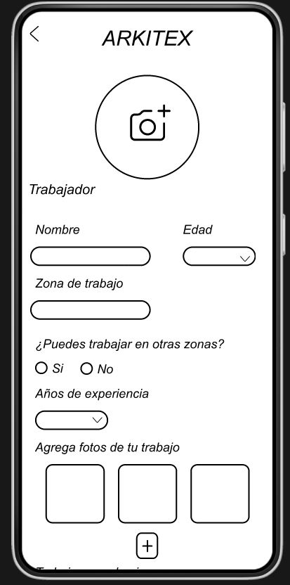
Prototipo de Baja Fidelidad
Para poder hacer unPrototipo interactivo creamos conexiones entre los distintos apartados que queremos que llamen a alguna pantalla con la funcion prototipo deFIGMA.
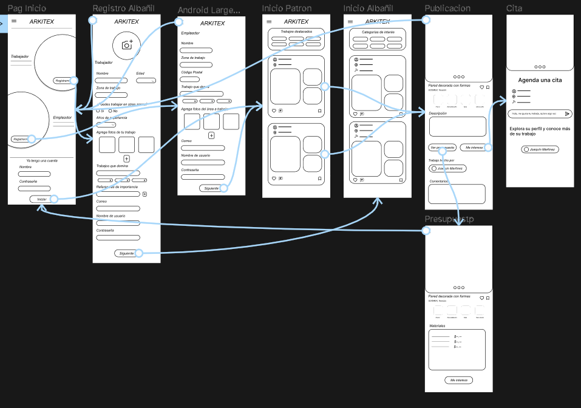
Estudio de usabilidad: Parametros
- Tipo de estudio: Estudio de usabilidad moderado.
- Lugar del estudio: CDMX, México | Presencial.
- Participantes: 5 participantes | 5 adultos
- duración: 10 - 15 minutos.
Diagrama de afinidad
Finalizadas las pruebas de usabilidad extraemos los comentarios más importantes de los usuarios en cuanto a como perciben el prototipo, que les gustaria y que se les dificulta, como diseñador UX debe tomar en consideracion los comentarios destacados de los usuarios, para eso es el diagrama de afinidad.

Maquetas
Despues de un estudio de usabilidad y tras recopilar comentarios de los usuarios estamos listos para agregar color, tipografia e iconografia a nuestro diseño, además de animaciones y otros factores que complementan el producto.
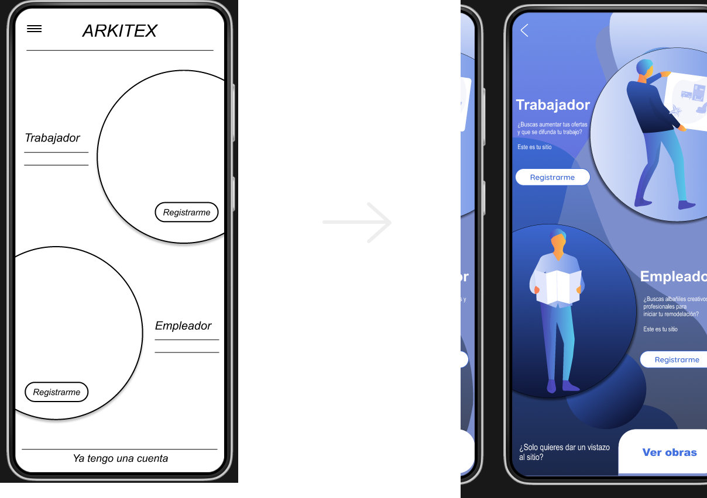
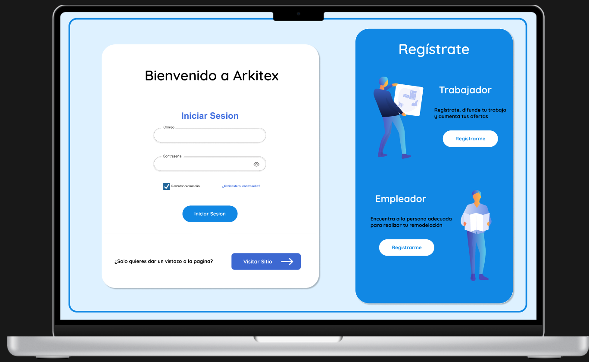
Prototipo de Alta Fidelidad
Despues de iterar por lo menos 2 veces un estudio de usabilidad se puede decir que la primera version de tu producto esta listo, tienes un prototipo de alta fidelidad interactivo.
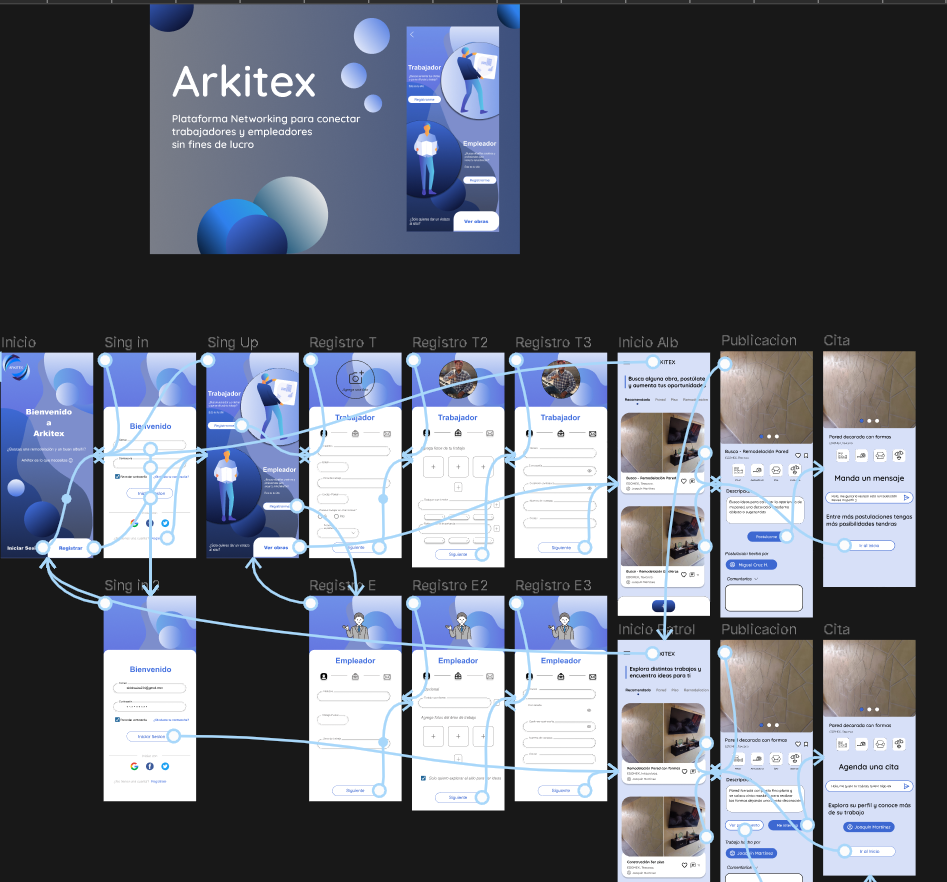
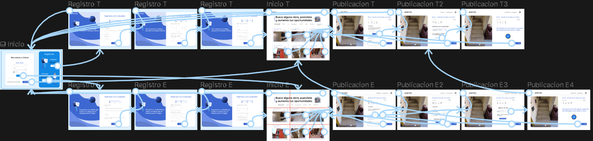
¿Que aprendi?
En mi tercer proyecto pude acentar mis conocimientos y habilidades de diseño, hay una diferencia enorme entre mi primer proyecto y el tercero, siento que estoy avanzando mucho en mi carrera de UX siento mucha satisfaccion al ver progreso y un gran entusiasmo en cada proyecto :).
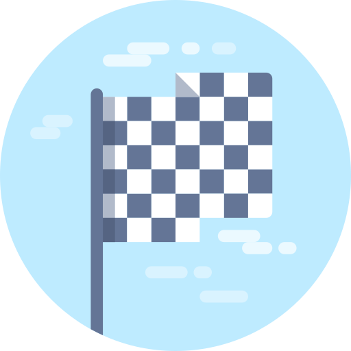